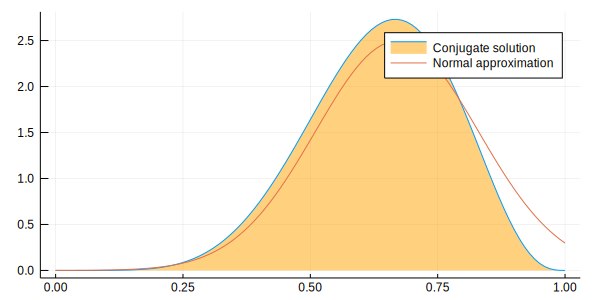
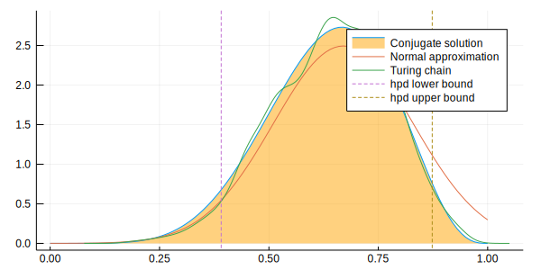

Load Julia packages (libraries) needed
using StatisticalRethinking
using Optim, Turing, Flux.Tracker
gr(size=(600,300));
Turing.setadbackend(:reverse_diff)loaded
┌ Warning: Package Turing does not have CmdStan in its dependencies:
│ - If you have Turing checked out for development and have
│ added CmdStan as a dependency but haven't updated your primary
│ environment's manifest file, try `Pkg.resolve()`.
│ - Otherwise you may need to report an issue with Turing
│ Loading CmdStan into Turing from project dependency, future warnings for Turing are suppressed.
└ @ nothing nothing:840
WARNING: using CmdStan.Sample in module Turing conflicts with an existing identifier.
:reverse_diffsnippet 2.8t
Define the data
k = 6; n = 9;Define the model
@model globe_toss(n, k) = begin
theta ~ Beta(1, 1) # prior
k ~ Binomial(n, theta) # model
return k, theta
end;Compute the "maximumaposteriori" value
Set search bounds
lb = [0.0]; ub = [1.0];Create (compile) the model
model = globe_toss(n, k);Compute the maximumaposteriori
result = maximum_a_posteriori(model, lb, ub)Results of Optimization Algorithm
* Algorithm: Fminbox with L-BFGS
* Starting Point: [0.7074651788576896]
* Minimizer: [0.6666666666346246]
* Minimum: 1.297811e+00
* Iterations: 3
* Convergence: true
* |x - x'| ≤ 0.0e+00: false
|x - x'| = 1.36e-08
* |f(x) - f(x')| ≤ 0.0e+00 |f(x)|: false
|f(x) - f(x')| = 2.91e-15 |f(x)|
* |g(x)| ≤ 1.0e-08: true
|g(x)| = 5.49e-10
* Stopped by an increasing objective: false
* Reached Maximum Number of Iterations: false
* Objective Calls: 40
* Gradient Calls: 40Use Turing mcmc
Turing.turnprogress(false)
chn = sample(model, NUTS(2000, 1000, 0.65));┌ Info: [Turing]: global PROGRESS is set as false
└ @ Turing /Users/rob/.julia/packages/Turing/xp88X/src/Turing.jl:81
┌ Info: [Turing] looking for good initial eps...
└ @ Turing /Users/rob/.julia/packages/Turing/xp88X/src/samplers/support/hmc_core.jl:246
[NUTS{Turing.FluxTrackerAD,Union{}}] found initial ϵ: 1.6
└ @ Turing /Users/rob/.julia/packages/Turing/xp88X/src/samplers/support/hmc_core.jl:291
┌ Warning: Numerical error has been found in gradients.
└ @ Turing /Users/rob/.julia/packages/Turing/xp88X/src/core/ad.jl:154
┌ Warning: grad = [NaN]
└ @ Turing /Users/rob/.julia/packages/Turing/xp88X/src/core/ad.jl:155
┌ Warning: Numerical error has been found in gradients.
└ @ Turing /Users/rob/.julia/packages/Turing/xp88X/src/core/ad.jl:154
┌ Warning: grad = [NaN]
└ @ Turing /Users/rob/.julia/packages/Turing/xp88X/src/core/ad.jl:155
┌ Warning: Numerical error has been found in gradients.
└ @ Turing /Users/rob/.julia/packages/Turing/xp88X/src/core/ad.jl:154
┌ Warning: grad = [NaN]
└ @ Turing /Users/rob/.julia/packages/Turing/xp88X/src/core/ad.jl:155
┌ Warning: Numerical error has been found in gradients.
└ @ Turing /Users/rob/.julia/packages/Turing/xp88X/src/core/ad.jl:154
┌ Warning: grad = [NaN]
└ @ Turing /Users/rob/.julia/packages/Turing/xp88X/src/core/ad.jl:155
┌ Warning: Numerical error has been found in gradients.
└ @ Turing /Users/rob/.julia/packages/Turing/xp88X/src/core/ad.jl:154
┌ Warning: grad = [NaN]
└ @ Turing /Users/rob/.julia/packages/Turing/xp88X/src/core/ad.jl:155
┌ Warning: Numerical error has been found in gradients.
└ @ Turing /Users/rob/.julia/packages/Turing/xp88X/src/core/ad.jl:154
┌ Warning: grad = [NaN]
└ @ Turing /Users/rob/.julia/packages/Turing/xp88X/src/core/ad.jl:155
┌ Info: Adapted ϵ = 0.9578390791627754, std = [1.0]; 1000 iterations is used for adaption.
└ @ Turing /Users/rob/.julia/packages/Turing/xp88X/src/samplers/adapt/adapt.jl:91
[NUTS] Finished with
Running time = 5.0150662429999855;
#lf / sample = 0.003;
#evals / sample = 6.861;
pre-cond. metric = [1.0].Look at the generated draws (in chn)
describe(chn)Iterations = 1:2000
Thinning interval = 1
Chains = 1
Samples per chain = 2000
Empirical Posterior Estimates:
Mean SD Naive SE MCSE ESS
lf_num 0.0030000000 0.134164079 0.0030000000 0.0030000000 2000.00000
elapsed 0.0025075331 0.076118594 0.0017020635 0.0021953340 1202.20989
epsilon 1.1224381138 1.169459120 0.0261499009 0.0493105061 562.45939
theta 0.6360030739 0.141416742 0.0031621745 0.0051225094 762.14241
lp -3.3190592140 0.784351311 0.0175386285 0.0269713545 845.69885
eval_num 6.8610000000 4.105375263 0.0917989816 0.1380253600 884.68354
lf_eps 1.1224381138 1.169459120 0.0261499009 0.0493105061 562.45939
Quantiles:
2.5% 25.0% 50.0% 75.0% 97.5%
lf_num 0.00000000000 0.00000000000 0.000000000 0.0000000000 0.00000000000
elapsed 0.00015128197 0.00015763575 0.000171609 0.0004108415 0.00092276617
epsilon 0.37088676482 0.95783907916 0.957839079 1.0079548635 2.57305557179
theta 0.33883816330 0.54280720291 0.646171490 0.7438412205 0.87079519843
lp -5.35598404924 -3.51435734171 -3.037441877 -2.8405070850 -2.78040346743
eval_num 4.00000000000 4.00000000000 4.000000000 10.0000000000 22.00000000000
lf_eps 0.37088676482 0.95783907916 0.957839079 1.0079548635 2.57305557179Look at the mean and sd
println("\ntheta = $(mean_and_std(chn[:theta][1001:2000]))\n")theta = (0.6451384410698796, 0.1396889134652362)Compute at hpd region
bnds = MCMCChain.hpd(chn[:theta], alpha=0.06);analytical calculation
w = 6; n = 9; x = 0:0.01:1
plot( x, pdf.(Beta( w+1 , n-w+1 ) , x ), fill=(0, .5,:orange), lab="Conjugate solution")
quadratic approximation
plot!( x, pdf.(Normal( 0.67 , 0.16 ) , x ), lab="Normal approximation")
Turing Chain & 89%hpd region boundaries
density!(chn[:theta], lab="Turing chain")
vline!([bnds[1]], line=:dash, lab="hpd lower bound")
vline!([bnds[2]], line=:dash, lab="hpd upper bound")
Show hpd region
println("hpd bounds = $bnds\n")hpd bounds = [0.38923, 0.899449]End of clip_08t.jl
This notebook was generated using Literate.jl.